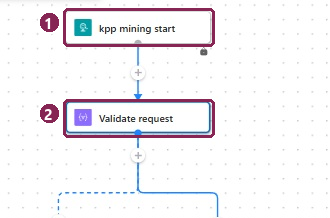

Browser bukan yang memilih cabang
- Klien / Python gatewayMenyiapkan
questionKirim POST dengan OAuth - Logic AppsValidasi request, simpan input, jalankan SwitchPanggil router dan specialist
- FoundryRouter memilih
mcpSpecialist minta work order - MCP / backing APIMembaca fixture
WO001Kembalikan bukti lewat Foundry - Normalizer dan ResponsePeriksa bukti; kembalikan jawaban dan sumber ke klien
Dari mana WO001 berasal?
Data work order memang ada di fixture mining sintetis. get_work_orders mencarinya untuk TRK001; Set variable hanya menyimpan hasil yang sudah diperiksa, bukan membuat data work order.
Apa bedanya URL trigger dengan URL Foundry?
URL HTTPS trigger dipakai klien untuk mengirim POST ke Logic Apps. URL project Foundry dipakai workflow untuk endpoint seperti /openai/v1/conversations dan /openai/v1/responses. Normalizer punya endpoint API sendiri. Ketiga URL itu tidak bisa saling menggantikan.
Siapkan resource dulu, baru jalankan request
Mulai dari checklist sandbox bersama. JSON workflow bukan installer: tidak membuat agent, tidak memberi izin, dan tidak mengisi data.
- Siapkan layanan yang dipanggil. Di project Foundry milikmu, sediakan router
kppdemo-router:1dan specialist yang dirujuk workflow (untuk MCP01:kppdemo-mcp:1), model deployment, dan koneksi MCP ke backing API. Isi fixture sintetis. Siapkan Search, knowledge, atau Fabric hanya jika akan menguji rute yang menggunakannya. - Siapkan normalizer. Host API normalizer dari layanan MAF dengan profil sandbox dan audience API yang sesuai. Logic Apps memakai API ini untuk memeriksa hasil specialist; alurnya tetap di Azure.
- Review WDL untuk sandbox. Baca workflow.json dan template Logic Apps Consumption. Pada checkout dengan baseline lengkap, jalankan compiler dari root repo setelah mengaktifkan profil runtime sendiri:
.\.venv\Scripts\python.exe -m tools.migrate_workflow --target logicappsCompiler menulis target lokal, bukan deploy. Review URI Foundry dan normalizer, audience, versi agent, serta setiap action. Template Bicep dan hasil ekspor historis masih mencatat identitas serta penamaan demo asal; jangan deploy apa adanya ke sandbox baru.
- Siapkan deployment. Terapkan definisi yang sudah direview di resource Consumption milik tim. Aktifkan system-assigned managed identity (identitas Azure milik workflow) dan atur izin per sambungan di bawah. Preview perubahan dengan what-if atau review setara sebelum menerapkannya.
- Cek versi yang akan dites. Setelah perubahan disetujui, pastikan workflow sudah tersimpan/terdeploy dan statusnya Enabled. Draft di Designer bukan versi yang sedang melayani trigger. Ambil URL trigger untuk autentikasi OAuth dari resource sendiri; jangan simpan URL bertanda tangan ke dokumen.
Periksa izin di setiap sambungan
- Caller atau gateway → trigger Logic Apps
- Policy Microsoft Entra di Request trigger memeriksa issuer (
iss), audience (aud), dan identitas caller (oid) yang disetujui. Demo memakai audience Azure Resource Manager. Biarkan SAS (akses dengan signature pada URL) nonaktif. Izin membaca run history terpisah dari izin memanggil trigger. - Managed identity Logic Apps → project Foundry
- Beri Foundry User pada scope project yang benar untuk managed identity workflow. Di action HTTP, pilih Managed identity dengan audience
https://ai.azure.com. Role pada akun manusia bukan izin yang dipakai runtime. - Managed identity Logic Apps → API normalizer
- Gunakan audience aplikasi API sendiri (pola
api://<APP_ID_API>). Izinkan principal workflow pada konfigurasi caller normalizer. Jangan memakai audience Foundry untuk API ini. - Agent/tool → data
- Periksa koneksi tool dan izin ke backing service. Izin ke project Foundry saja tidak memberi akses ke semua data atau indeks.
Lihat contoh pengaturan akses demo dan panduan autentikasi Logic Apps. Ganti nilai lingkungan dengan milikmu secara lokal; jangan commit token, file env, atau callback bertanda tangan.
Uji satu POST dari sandbox sendiri
Gunakan PowerShell 7 dan Azure CLI yang sudah masuk ke tenant/subscription sandbox dengan caller yang diizinkan. Isi $trigger secara lokal dengan URL trigger OAuth tanpa SAS. Perintah ini benar-benar menjalankan workflow dan bisa menimbulkan biaya. Tidak perlu UI operator.
$trigger = '<URL_TRIGGER_OAUTH_TANPA_SAS>'
$body = @{ question = 'Show work orders for equipment TRK001.' } | ConvertTo-Json -Compress
$token = az account get-access-token --resource 'https://management.azure.com' --query accessToken -o tsv
if ($LASTEXITCODE -ne 0 -or -not $token) { throw 'Token sandbox tidak tersedia.' }
try {
$result = Invoke-RestMethod -Uri $trigger -Method Post `
-ContentType 'application/json' -Body $body -Authentication Bearer `
-Token (ConvertTo-SecureString $token -AsPlainText -Force) `
-ResponseHeadersVariable runHeaders -ErrorAction Stop
$result | Select-Object run_id, route, status, answer, sources
$runHeaders['x-ms-workflow-run-id']
} finally {
Remove-Variable token
}question wajib; run_id boleh dikosongkan agar workflow membuat ID korelasi. ID tersebut berbeda dari ID run native Azure. Pada rekaman demo, tombol Run with payload tanpa OAuth ditolak dengan HTTP 401 sebelum workflow berjalan; jangan membuka SAS untuk mengakalinya.


Cocokkan hasil dengan run yang sama
- Buka Overview → Run history. Cocokkan run dengan header
x-ms-workflow-run-idatau korelasi input saat membaca output. - Lihat
route_questionmemilihmcp. Cabang lain berstatus Skipped itu normal. - Buka
kpp_mining_end→ Inputs → Body. Harapkanstatus: success,WO001untukTRK001, dan sumberurn:kppdemo:maintenance/TRK001.
400, 401/403, atau bukti tidak cocok?
400: cek POST dan Body sesuai schema. 401/403: pastikan di sambungan mana request ditolak; periksa token, audience, caller policy, atau RBAC yang terkait. Gagal setelah router: cek output router, action specialist, dan evidence native. Jangan mengganti error dengan jawaban buatan.
HTTP 200 bukan berarti data ditemukan. blocked, clarification, dan unsupported juga bisa dikembalikan sebagai respons bisnis. Ini panduan dan bukti historis, bukan run baru.
Berikutnya: baca parameter per node, ikuti UI dan trace, atau cek contoh hitung biaya.